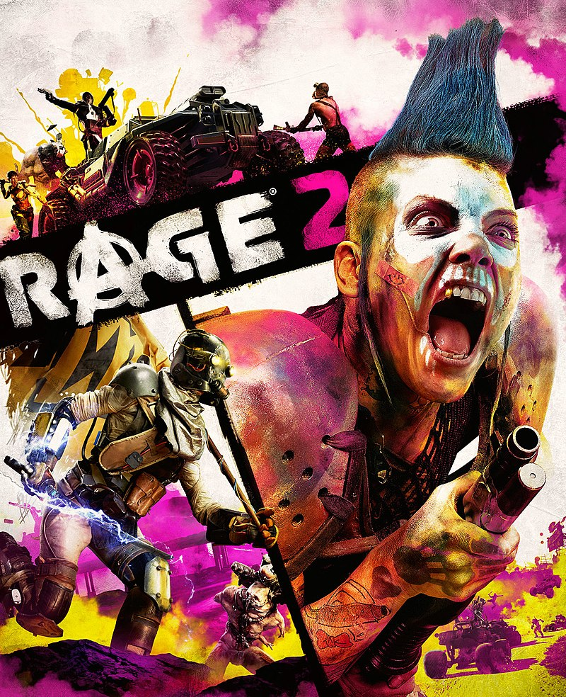

Все права защищены. Копирование любых материалов сайта запрещено! Все названия продуктов и игр, компаний и марок, логотипы, товарные знаки и другие материалы являются собственностью соответствующих владельцев. Только лицензионные ключи ко всем игровым платформам: Steam, Uplay, Battle.net, Origin и другие. Выгодно, надежно и быстро!

Контактные данные: kaal_208@mail.ru 88005553535

ZBOX
Сайт игровых ключей
RAGE 2
 >
599 Руб
Описание
Компьютерная игра в жанре шутера от первого лица, продолжение игры 2011 года, Rage. Как и первая часть франшизы, Rage 2 будет издаваться компанией Bethesda Softworks, однако разработкой займётся не только компания-разработчик оригинальной игры, студия id Software, но и шведская компания Avalanche Studios. Игра была официально анонсирована 14 мая 2018 года с публикации тизер-трейлера. 15 мая 2018 года был опубликован первый трейлер игрового процесса. Выход игры на платформах Windows, PlayStation 4 и Xbox One состоялся 14 мая 2019 года. Игра использует движок Apex разработки Avalanche; для id Software Rage 2 стала первой игрой, созданной на движке, не разработанном в недрах студии.
На главную страницу